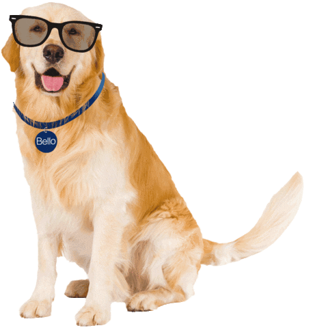

¡¡Aprende a bañar a tus perritos con estos sencillos pasos!! 🐕🐕
PASOS A SEGUIR
11 .- ¡Ya casi estamos terminando! Después de secar su cuerpo tenemos que limpiar su cara y sus oÃdos. Si le hemos puesto al perro tapones en los oÃdos es el momento de quitarlos.